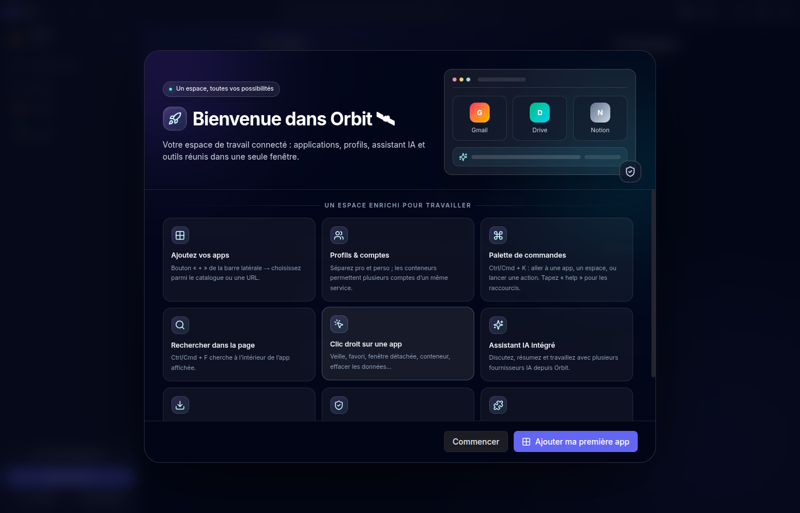
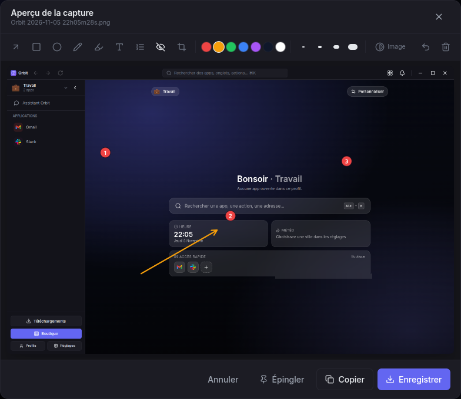
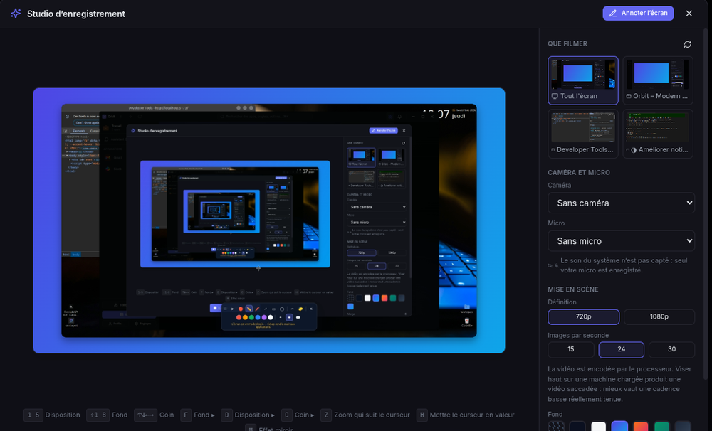
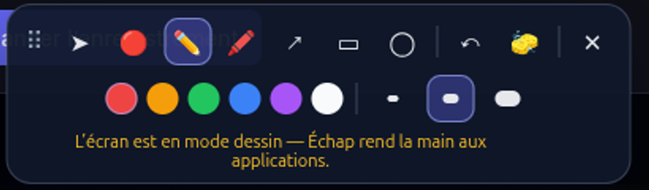
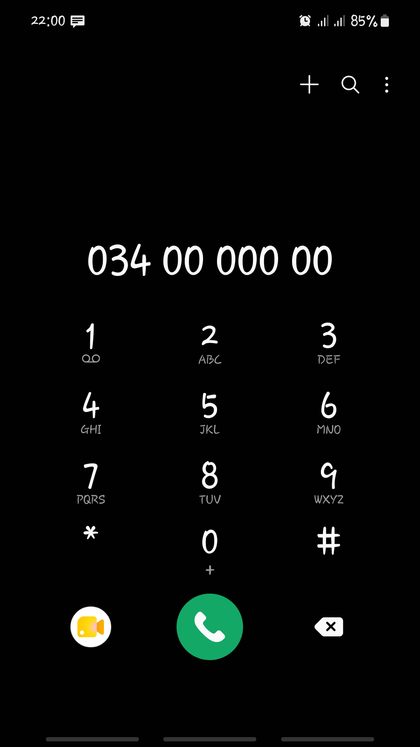

![Logo Orbit]()
Orbit — guide utilisateur
Présentation
Orbit rassemble vos applications web dans une seule fenêtre. Au lieu de vingt onglets et trois navigateurs ouverts, un espace unique où chaque service a sa place, sa session et ses réglages — et autour, les outils qui manquent toujours : capture et annotation, enregistrement d'écran, coffre-fort, assistant, et jusqu'à votre téléphone Android.
Ce guide est écrit pour être lu dans l'ordre la première fois, puis consulté par section. Chaque fonctionnalité y est décrite de la même façon : à quoi elle sert, comment y accéder (bouton et raccourci clavier), et ce qu'elle donne.
| Application | Orbit — Windows, macOS, Linux |
| Auteur | Clarco RAHERINANDRASANA |
| Ce document | Guide utilisateur complet, en français |
| Mise à jour | Généré à partir du dépôt à chaque version |
Conventions. Les touches sont écrites
Alt+K. Sur macOS, le modificateur Alt devient généralement ⌘. Les libellés, extensions et raccourcis peuvent évoluer : ceux affichés dans Réglages → Raccourcis font foi pour votre installation.
1. Découvrir Orbit
Orbit est une application de bureau pour Windows, macOS et Linux. Elle ouvre vos services web dans des vues intégrées et les organise dans une barre latérale. Chaque profil peut regrouper ses propres applications, connexions, apparence et espace de travail.
Ce qu’Orbit rassemble
- Applications web et liens personnels dans un espace configurable.
- Profils et sessions isolées, avec partage de connexion facultatif au sein d’un profil (SSO).
- Conteneurs pour utiliser plusieurs comptes d’un même service.
- Écran partagé, espaces de travail, fenêtres détachées et dossiers d’apps.
- Recherche, assistant IA, correcteur, coffre-fort et gestionnaire de téléchargements.
- Extensions optionnelles, dont Text Snippets, Fake Data Filler et Web Clipper.
- Orbit Phone en extension optionnelle pour piloter un appareil Android compatible.
Orbit ne remplace pas les services web que vous ajoutez : leur disponibilité, les connexions et leurs règles de confidentialité restent celles de leurs éditeurs.
2. Installer et lancer Orbit
Téléchargez la version publiée depuis la page des releases GitHub. Choisissez le format correspondant au système :
| Système | Formats publiés |
|---|---|
| Windows | Installateur .exe ou version portable .exe |
| Linux | .AppImage ou paquet Debian .deb |
| macOS | Image disque .dmg ou archive .zip |
L’application n’est pas signée pour toutes les plateformes. Windows SmartScreen ou macOS Gatekeeper peuvent afficher un avertissement d’éditeur non identifié. Vérifiez que le téléchargement vient bien de la release du dépôt officiel avant de décider de poursuivre.
Au premier démarrage, l’écran de bienvenue permet d’ajouter une première app ou de commencer avec un espace vide. Installez vos applications via la boutique intégrée ou ajoutez une URL web.

3. Organiser son espace
Applications
- Utilisez + ou la boutique pour ajouter une app.
- Ajoutez une URL personnelle si le service n’est pas dans le catalogue.
- Réorganisez la liste par glisser-déposer ; créez des dossiers pour regrouper les apps.
- Le clic droit sur une app donne accès aux actions telles que favori, veille, fenêtre détachée, déplacement de profil ou gestion de session.
Profils et sessions
Créez des profils séparés, par exemple Travail et Personnel. Par défaut, les sessions sont cloisonnées pour réduire les mélanges de comptes. L’option de partage de connexion d’un profil rapproche le comportement d’un navigateur : les apps du profil peuvent partager la session d’un même service. Les conteneurs servent à garder plusieurs comptes séparés lorsque c’est nécessaire.
Avant de changer le mode de partage, lisez l’avertissement affiché dans Orbit : les apps peuvent être rechargées et certaines sessions nécessiter une nouvelle connexion.
Espaces, fenêtres et apparence
- Placez plusieurs apps côte à côte dans l’écran partagé et enregistrez une disposition dans un espace de travail.
- Détachez une app dans une fenêtre séparée lorsque vous souhaitez la déplacer sur un autre écran.
- Personnalisez le thème, la couleur d’accent, les polices et les modules affichés dans les barres.
- Chaque profil peut avoir ses réglages d’accueil et de fond distincts.
Espaces de travail
Un espace de travail mémorise le profil, l’application affichée et l’écran
partagé du moment. Le bouton Espaces de travail de la barre du haut
(icône en damier) les liste ; ils apparaissent aussi dans la palette Alt+K.
| Action | Où |
|---|---|
| Enregistrer la disposition actuelle | Bouton Enregistrer la disposition actuelle, puis un nom |
| Rouvrir un espace | Clic sur son nom (barre du haut ou Alt+K) |
| Réenregistrer un espace sur la disposition actuelle | Icône disquette, au survol de la ligne |
| Supprimer | Icône corbeille, au survol de la ligne |
Réenregistrer évite de supprimer puis recréer un espace quand on veut simplement l’ajuster — il garde son nom et sa place dans la liste.
4. Recherche et raccourcis utiles
Sur Windows et Linux, les raccourcis Orbit utilisent généralement Alt. Sur macOS, le modificateur équivalent est généralement ⌘. Les apps web conservent leurs raccourcis propres.
| Raccourci | Action |
|---|---|
Alt/⌘ + K | Recherche et palette de commandes |
Alt/⌘ + , | Réglages |
Alt/⌘ + Maj + O | Boutique d’applications |
Alt/⌘ + Maj + P | Gestion des profils |
Alt/⌘ + L | Modifier l’URL de la page active |
Alt/⌘ + Page ↓ / Page ↑ | App suivante / précédente |
Alt/⌘ + Maj + Page ↓ / Page ↑ | Profil suivant / précédent |
Ctrl + F ou ⌘ + F | Rechercher dans la page |
Ctrl + R ou ⌘ + R | Recharger l’app active |
Alt/⌘ + Maj + E | Relire le champ actif hors ligne |
Alt/⌘ + Maj + I | Ouvrir la relecture IA du texte actif |
Alt/⌘ + Maj + A | Ouvrir la discussion IA |
Les raccourcis IA peuvent être configurés. La liste à jour et les réglages personnalisés se trouvent dans Orbit.
Ce que la palette sait faire
Alt/⌘ + K ne cherche pas que des apps. Elle calcule (4*4, 20% de 150),
convertit (10 km en mi, 255 in hex), ouvre une adresse, retrouve une page
déjà visitée et, si un trousseau est déverrouillé, copie un mot de passe
ou un code à usage unique sans passer par les réglages. Le mot de passe ne
transite pas par l’interface : Orbit l’écrit lui-même dans le presse-papiers et
le vide après 30 secondes. Les identifiants n’apparaissent qu’à partir de deux
caractères saisis — jamais à l’ouverture de la palette.
Historique de navigation
Les pages visitées alimentent cette recherche. Pour l’effacer :
- dans la palette, le bouton 🗑 d’une page (ou
Maj + Suppr) l’oublie seule ; - les commandes « oublier la dernière heure » et « vider tout l’historique » s’y trouvent aussi, avec une confirmation ;
- Réglages → Confidentialité → Historique de navigation indique ce qui est mémorisé, permet d’arrêter l’enregistrement et de vider par période.
Les pages de connexion et les adresses porteuses de jetons ne sont jamais enregistrées, et l’historique ne quitte pas la machine : il n’entre pas dans la synchronisation.
Choisir ce que la palette cherche
Réglages → Général → Recherche (Alt+K) active ou coupe séparément chaque source : pages déjà visitées, pages ouvertes en ce moment, identifiants des trousseaux déverrouillés et code à usage unique. Les apps, profils, actions, calculs et conversions restent toujours disponibles.
5. Assistant IA et relecture
Orbit propose un assistant de discussion, des outils de résumé et de rédaction, ainsi qu’une relecture. Le mode local facultatif télécharge un modèle sur l’appareil ; il peut demander de l’espace disque, de la mémoire et un matériel compatible.
Des fournisseurs distants peuvent aussi être configurés. La connexion à ces services et le traitement des textes dépendent du fournisseur. Lisez la confirmation présentée par Orbit avant d’envoyer du contenu. Les clés API configurées sont protégées par le stockage sécurisé du système lorsqu’il est disponible.
Le correcteur rapide fonctionne localement. Un moteur grammatical LanguageTool local peut être installé en option ; il nécessite Java 17 ou plus récent et un téléchargement initial conséquent. Les règles rapides restent disponibles si le moteur complet n’est pas installé.
6. Coffre-fort de mots de passe
Le coffre-fort intégré stocke les identifiants dans des trousseaux protégés par un mot de passe maître. Déverrouillez uniquement lorsque vous souhaitez consulter ou utiliser les entrées. Les fonctions de santé du coffre peuvent signaler les mots de passe faibles ou réutilisés et, si vous l’activez, vérifier les mots de passe compromis à travers un service externe.
Lors de cette vérification facultative, Orbit calcule localement une empreinte SHA-1 et n’envoie que les cinq premiers caractères au service Have I Been Pwned ; le service voit néanmoins l’adresse IP et l’heure de la requête. Consultez les explications affichées dans les réglages de santé avant de l’activer.
Rapatrier une base KeePassXC
Si vous utilisez KeePassXC, le bouton 🗄 Rapatrier la base KeePassXC de la barre d’outils du trousseau recopie ses identifiants dans le trousseau Orbit ouvert. KeePassXC doit tourner, sa base être déverrouillée, Orbit être associé (Réglages → KeePassXC) et l’option « Allow limited access to all entries in connected databases » être cochée dans KeePassXC → Paramètres → Intégration navigateur → Avancé.
Les entrées déjà présentes ne sont pas dupliquées : Orbit les reconnaît par domaine et nom d’utilisateur, puis vous demande s’il faut les fusionner (compléter les champs vides) ou les écraser. Les entrées KeePassXC sans URL ne peuvent pas être récupérées — le protocole ne rend les mots de passe que site par site ; Orbit en donne la liste à la fin pour que vous les repreniez à la main.
Déverrouillage et code 2FA
Au déverrouillage, une case permet de mémoriser le mot de passe maître sur cet appareil. Il est alors gardé par le trousseau du système, jamais en clair sur le disque — mais quiconque ouvre une session sous votre compte pourra ouvrir ce trousseau sans le connaître. C’est à vous de juger ; l’option est désactivée par défaut, par trousseau, et s’oublie d’elle-même si vous changez le mot de passe maître.
Pour les comptes à double facteur, un bouton ⏱ Code 2FA apparaît dans la page après un remplissage : il remplit le champ de code, ou le copie si le champ n’existe pas encore. Il se coupe dans Réglages → Mots de passe, avec le choix des sources d’identifiants.
Sauvegarde automatique
Réglages → Mots de passe → Sauvegarde automatique chiffrée écrit à
intervalle régulier une archive .orbitvault dans le dossier de votre choix,
en ne conservant que les N dernières. Deux points à connaître :
- la phrase de passe des archives est gardée par le trousseau du système. Notez-la ailleurs : sans elle, les archives sont illisibles, y compris pour vous ;
- seuls les trousseaux déverrouillés peuvent être archivés — Orbit n’a pas la clé des autres. L’écran indique lesquels ont été laissés de côté.
Préférez un support différent de celui d’Orbit : une sauvegarde sur le même disque ne protège pas d’une panne de ce disque.
Sauvegarder et exporter à la main
Le bouton Exporter propose deux choses différentes :
- Sauvegarde chiffrée (recommandé) : un fichier
.orbitvaultchiffré en AES-256-GCM, dont la clé est dérivée par scrypt de la phrase de passe que vous choisissez (à défaut, le mot de passe maître). C’est le format à poser sur une clé USB ou un cloud : il conserve tout le trousseau (catégories, URLs secondaires, favoris, historique des mots de passe) et se restaure dans Orbit avec le bouton 🗃 Restaurer une archive chiffrée. - Export en clair CSV / JSON : réservé à une migration vers un autre gestionnaire. Ces fichiers contiennent tous vos mots de passe lisibles ; supprimez-les dès la migration terminée.
Dans les deux cas, l’export exige de resaisir le mot de passe maître — un écran laissé sans surveillance ne doit pas pouvoir sortir les secrets d’un clic.
7. Captures d’écran, annotation et enregistrement
Prendre une capture
Alt+Maj+S ouvre le menu de capture. Quatre voies, parce que la question posée
est la même — « je veux montrer ce que j’ai à l’écran » — et qu’on ne sait pas
toujours d’avance si une image suffira :
| Touche | Voie |
|---|---|
1 | Zone visible de la page |
2 | Page entière, défilement compris |
3 | Choisir une zone à la souris |
4 | Enregistrer une vidéo (studio) |
Un délai réglable (0 à 10 s) laisse le temps de préparer l’écran ; Échap
annule le compte à rebours.
Annoter la capture avant de l’enregistrer
L’aperçu qui suit la capture n’est pas qu’un aperçu : c’est un éditeur. Tout est dessiné dans l’image, donc « Enregistrer » et « Copier » rendent exactement ce qui est affiché. Une capture à laquelle on n’a pas touché part telle quelle, sans ré-encodage.
| Outil | À quoi il sert |
|---|---|
| Flèche | Désigner un élément précis |
| Rectangle, Ellipse | Entourer une zone |
| Dessin libre (stylo) | Tracer à main levée |
| Surligneur | Attirer l’œil sans masquer ce qui est dessous |
| Texte | Écrire sur l’image (Entrée valide, Maj+Entrée passe à la ligne) |
| Étape numérotée | Poser des pastilles 1, 2, 3… |
| Masquer (pixelliser) | Rendre une zone illisible |
| Recadrer | Ne garder qu’une partie de la capture |

Quelques précisions utiles :
- Les étapes numérotées servent à documenter un parcours : chaque clic pose la pastille suivante, et la numérotation se fait toute seule. Si vous annulez la pastille 3, le clic suivant redonne un 3 — pas un 4. L’épaisseur choisie dans la barre d’outils commande la taille de la pastille, comme elle commande la taille du texte.
- Le masquage est une pixellisation en blocs, pas un flou : sur du texte, un flou se devine encore, des blocs non.
- Le recadrage ne déplace pas les annotations. Il change la zone regardée ; le bouton Tout l’écran revient à la capture entière sans rien perdre.
- Les curseurs Luminosité, Contraste et Saturation (bouton Image) s’appliquent à l’enregistrement comme à l’aperçu.
- Annuler retire la dernière annotation, Tout effacer remet la capture dans son état d’origine, réglages compris.
Masquer les données sensibles en un clic
Partager une capture, c’est parfois partager ce qu’on n’avait pas vu. Orbit repère dans la page, avant la capture, les adresses e-mail, les IBAN, les numéros de carte bancaire et de téléphone — c’est le seul moment où le texte est encore du texte, avec ses coordonnées.
Si quelque chose est trouvé, un bouton ambré « Masquer N donnée(s) sensible(s) » apparaît dans la barre d’outils. Orbit propose, vous décidez : chaque zone devient un masque ordinaire, que vous pouvez annuler un par un.
Les numéros de carte sont vérifiés par la clé de Luhn et les IBAN par le modulo 97, pour ne pas masquer une référence de commande qui leur ressemble. Le repérage concerne les captures « zone visible » et « page entière ».
Épingler une capture
Le bouton Épingler place la capture — annotée ou non — dans une petite fenêtre flottante toujours visible, pour la garder sous les yeux pendant qu’on travaille. Elle se déplace en la saisissant n’importe où, se redimensionne en conservant ses proportions, et plusieurs épinglages se décalent en cascade.
Au survol, une barre apparaît : opacité (quatre niveaux, pour lire à
travers), copier, enregistrer, fermer. Au clavier : Ctrl+C,
Ctrl+S, O pour l’opacité, Échap pour fermer.
Enregistrer une vidéo (studio)
Le studio filme un écran ou une fenêtre, avec ou sans caméra, et le met en scène : fond uni ou dégradé, marge, coins arrondis, ombre portée. Tout est composé sur un canvas, et c’est ce canvas qui est enregistré — l’aperçu est la vidéo.

Cinq dispositions : écran seul, écran + pastille, caméra seule,
côte à côte, et présentation. Cette dernière donne la priorité à ce qui
porte l’information : la capture garde toute la hauteur et presque toute la
largeur, la caméra devient une vignette posée à mi-hauteur sur le côté choisi.
Son cadrage se règle d’une touche (O) :
- chevauché — la vignette mord sur la capture, comme une incrustation de plateau ;
- espacé — même vignette, mais un écart la sépare de la capture.
Changer de disposition, de cadrage ou de fond ne coupe pas l’image : la composition glisse vers sa nouvelle place en une fraction de seconde, et le fond passe en fondu. Un réglage qu’on fait glisser (taille de la pastille, marge) reste lui immédiat.
Pendant la prise, ces touches évitent de rouvrir le panneau et de sortir du cadre :
| Touche | Effet |
|---|---|
1–5 | Aller directement à une disposition |
Maj+1–8 | Aller directement à un fond |
↑ ↓ ← → | Placer la caméra, un axe à la fois |
F | Faire défiler les fonds |
D | Faire défiler les dispositions |
C | Changer le coin de la caméra |
Z | Zoom qui suit le pointeur |
H | Halo du curseur |
M | Effet miroir de la caméra |
V | Anneau de voix autour de la caméra |
X | Coup de zoom sur le curseur, qui revient tout seul |
O | Cadrage de la présentation : chevauché ou espacé |
C | En présentation : hauteur de pose de la vignette |
Alt+1–5 | Rappeler un cadrage mémorisé |
A | Annoter l’écran (voir ci-dessous) |
P | Pause / reprise |
S | Arrêt |
R | Réduire le studio en une barre |
Chaque touche annonce ce qu’elle vient de changer sous l’aperçu, et dit quand le réglage ne se voit pas encore (le cadrage sans caméra, par exemple) : un raccourci sans effet visible est sinon indiscernable d’un raccourci cassé.
Depuis l’application que vous filmez. Les touches ci-dessus ne répondent
que si Orbit a le focus — or pendant une prise, vous êtes ailleurs. Le temps
de l’enregistrement, Orbit pose donc les mêmes actions en raccourcis système :
Alt+Maj+D (disposition), Alt+Maj+F (fond), Alt+Maj+C (place de la
caméra), Alt+Maj+Z (zoom suivi), Alt+Maj+X (coup de zoom), Alt+Maj+O
(cadrage), Alt+Maj+P (pause) et Alt+Maj+K (arrêt). Ils sont libérés à la
fin de la prise. La liste affichée sous l’aperçu ne montre que ceux qui ont
réellement pu être enregistrés : votre gestionnaire de fenêtres s’en réserve
parfois un.
« Réduire » est ce qui permet de filmer Orbit lui-même : il ne reste qu’un chronomètre, la pause, l’arrêt et l’annotation. La cadence réellement tenue est affichée pendant l’enregistrement — une vidéo saccadée se découvrirait sinon à la relecture.
Mettre en valeur et rythmer la prise. Le coup de zoom (X) rapproche
l’image de votre curseur pendant trois secondes puis revient tout seul : c’est
le geste qu’on fait au moment de montrer quelque chose, là où un zoom permanent
finit par donner le mal de mer. L’anneau de voix (V) fait respirer un
liseré autour de la caméra au rythme de ce que capte le micro : on voit qui
parle. Un carton de titre peut ouvrir la vidéo : saisissez-le avant la
prise, il s’affiche quelques secondes puis s’efface pendant que la composition
se découvre dessous. Enfin, la pause fige l’image avec un bandeau qui reste
une fraction de seconde dans la vidéo : à la relecture, la coupure se lit comme
voulue.
Cadrages mémorisés. Une démonstration client et un tutoriel ne se filment
pas pareil. Le panneau Cadrages mémorisés enregistre la mise en scène du
moment sous un nom (jusqu’à cinq) et la rappelle d’un clic ou d’un Alt+chiffre.
La définition et la cadence n’en font pas partie : ce sont des réglages propres
à la machine, et les imposer donnerait une vidéo saccadée sans qu’on comprenne
pourquoi.
Annoter l’écran pendant une démonstration
La touche A (ou le bouton Annoter l’écran) ouvre une couche de dessin
par-dessus tout l’écran, pas seulement par-dessus Orbit. C’est une vraie
fenêtre : un enregistrement ou une capture la reprennent telle quelle.
Dans sa palette : pointeur laser (avec traîne), stylo, surligneur,
flèche, rectangle, ellipse, six couleurs, trois épaisseurs,
annuler (Ctrl+Z) et tout effacer. La palette se déplace par sa poignée
⠿.

Le mode pointeur (➤) est la clé : la couche devient traversante, vos clics
vont aux applications qui sont dessous et les tracés restent affichés par-dessus.
Échap revient au pointeur, un second Échap ferme la couche.
8. Téléchargements et extensions
Gestionnaire de téléchargements
La page Téléchargements rassemble les fichiers, l’historique, les téléchargements de médias pris en charge et les réglages de destination. Vous pouvez choisir un dossier permanent ou demander un emplacement à chaque téléchargement. Les liens magnet sont transmis au client torrent associé par le système ; Orbit n’est pas lui-même un client torrent.
La disponibilité du téléchargement de vidéos/audio dépend des outils et des conditions du site source. Respectez les droits d’auteur, les conditions d’utilisation et les lois applicables.
Installer une extension Orbit
Ouvrez Réglages → Extensions. Les extensions distribuées séparément peuvent être installées depuis leur archive ZIP. Une extension n’est activée qu’après installation et activation. Les extensions du Chrome Web Store ne sont pas toutes compatibles avec Electron.
Les extensions livrées avec Orbit sont inertes tant qu’elles ne sont pas installées : ni leur code ni leurs fonctionnalités ne sont chargés. Quand une version plus récente est livrée avec une mise à jour d’Orbit, le bouton Mettre à jour apparaît en face de l’extension, avec la version installée.
- Text Snippets : remplace les abréviations configurées (par défaut, par exemple
;email) par leur texte complet dans les champs compatibles. La conversion se produit au fil de la saisie. - Fake Data Filler (Orbit) : 🎲 ou
Alt+Fremplit le champ focalisé ;Alt+Maj+Fremplit les champs visibles du formulaire actif. Les champs de connexion sont ignorés. Les valeurs sont générées localement ; les champs personnalisés se règlent dans Extensions. Un champ qui attend une image (avatar, couverture, photo de produit) reçoit un fichier PNG dessiné sur l’appareil, sans aucun envoi réseau. Les champs d’adresse de photo reçoivent un portrait ou une photo aléatoire, ce qui peut être coupé par « Photos et images de test » dans les réglages de l’extension. Les types reconnus couvrent aussi le sexe, la date de naissance, l’âge, l’IBAN (clé valide) et les cartes de test (numéro valide au sens de Luhn, expiration et cryptogramme). - Web Clipper : conserve localement une sélection ou le contenu principal d’une page, puis permet de rechercher et d’exporter les captures en Markdown.
- Souris & Défilement : défilement lissé et réglable (souplesse, pixels par cran, vitesse, sens inversé,
Maj+molette pour l’axe horizontal, défilement rapide avecAlt), défilement automatique au clic du milieu maintenu, et une palette de présentation (Alt+Maj+D) : pointeur laser, stylo, surligneur, flèche, rectangle, ellipse, couleurs, épaisseurs, spot lumineux, halo de clic, curseur mis en évidence. Le pavé tactile est laissé tranquille (il défile déjà en continu) et les applications qui pilotent la molette elles-mêmes — cartes, Figma, éditeurs de code — ne sont jamais touchées. Une règle par site permet de couper le lissage là où il gêne. - Color Picker : pipette de couleur intégrée, bouton flottant 🎨 ou
Alt+C. - QR Code Generator : QR code de la page ou d’un texte,
Alt+Q. Entièrement local, aucune requête réseau. - Sticky Notes : un bloc-notes attaché au domaine courant (
Alt+N), qui se rouvre à chaque visite du site. - Page to Markdown : convertit la page en Markdown et la télécharge (
Alt+M, ou le menu contextuel). - Téléphone Orbit : extension optionnelle pour piloter un Android compatible. Voir la section suivante.
Téléphone Orbit
Une fois l’extension Téléphone Orbit installée, un bouton Téléphone apparaît dans la barre du haut, avec le nombre de notifications du mobile. Branchez l’appareil en USB avec le débogage USB activé (ou en sans-fil, Android 11+), puis installez le moteur scrcpy embarqué depuis le panneau : Orbit le télécharge dans ses propres données, sans toucher au système.
L’accueil du Téléphone se compose de widgets que l’on ajoute ou retire (bouton Ajouter un widget) :
| Widget | Ce qu’il montre |
|---|---|
| Horloge | Heure et date de l’appareil |
| Appareil et batterie | Modèle, charge, état de la connexion |
| Applications favorites | Les apps épinglées en tête |
| Applications récentes | Les dernières ouvertes depuis Orbit |
| Notifications | Les alertes du mobile, avec « Tout effacer » |
| Contrôles rapides | Volume, Wi-Fi, Bluetooth, réglages Android, envoi de fichier |
| Appels récents | Le journal d’appels, avec rappel en un clic |
Ce sont des widgets Orbit : les widgets Android publiés par des applications ne sont pas hébergés ici, cela demanderait un hôte de widgets natif sur Android.
Appels
- Appel entrant : un bandeau s’affiche au-dessus d’Orbit avec Décrocher et Refuser. Il dit qui appelle — beaucoup de téléphones titrent seulement « Appel entrant » et laissent l’identité ailleurs, alors Orbit lit les autres champs de la notification, interroge la radio au besoin, puis cherche le nom dans vos contacts. Si rien n’est transmis (numéro masqué, appel d’une application qui ne dit rien), il l’annonce franchement au lieu d’afficher un libellé qui ne nomme personne. Le bandeau indique aussi depuis combien de temps ça sonne.
- Appels récents : le journal du mobile, appels manqués en évidence, avec la durée et l’horodatage. Rappeler lance l’appel depuis le téléphone ; Préparer ouvre son clavier avec le numéro prêt, à confirmer sur l’appareil — un appel ne part jamais par surprise. Un numéro masqué est signalé comme tel.

Applications et fichiers
- Chaque application s’ouvre dans sa propre fenêtre de bureau (scrcpy 3.0+, Android 11+). Le bouton Miroir reste une session séparée qui affiche l’écran physique.
- Jusqu’à huit applications épinglées dans une pastille flottante toujours accessible dans Orbit. Poussée contre le bord gauche ou droit, elle se replie en languette et ne laisse qu’un onglet discret : un clic la rouvre, un glissement la ramène où vous voulez. Un point rouge sur la languette signale les notifications en attente.
- Envoyer un fichier (contrôles rapides) dépose un ou plusieurs fichiers dans les téléchargements du téléphone.
Répondre à un SMS depuis Orbit n’est pas possible, et ce n’est pas un oubli : l’action « Répondre » d’une notification Android est réservée à l’application qui l’a posée, et ADB ne peut pas la déclencher. De même, le presse-papiers partagé n’a pas d’équivalent ADB sur Android récent — dans une fenêtre miroir, scrcpy le synchronise déjà dans les deux sens.
Visionneuse de documents
Un fichier .md, .txt, .json, .csv ou un fichier de code ouvert dans
Orbit s’affiche dans une visionneuse plutôt que d’être téléchargé. Pour le
Markdown, le rendu couvre les titres (dièses ou soulignés), les listes et cases
à cocher, les tableaux, le code, les citations et les alertes GitHub
(> [!NOTE], > [!WARNING]…), les formules mathématiques TeX ($x^2$,
$$…$$, \(…\), \[…\]), les notes de bas de page numérotées — cliquez le
renvoi pour y aller, la flèche ↩ pour revenir — et les lecteurs audio et
vidéo.
Pour protéger votre lecture, ni les images ni les médias d’un document distant ne sont chargés d’office : un média s’ouvre au clic, une image reste une pastille qui mène au navigateur. Le bouton Source affiche le fichier brut.
9. Confidentialité et sécurité
- Les profils et applications utilisent des sessions web isolées selon la configuration ; le SSO est facultatif.
- Le stockage des cookies dans les versions empaquetées utilise le mécanisme de chiffrement d’Electron et le trousseau du système lorsqu’il est disponible.
- Les données de l’assistant local et de la relecture rapide restent sur l’appareil. Les fonctions connectées envoient les données nécessaires au fournisseur choisi.
- Fake Data et Text Snippets n’ont pas besoin de services externes pour fonctionner. Seule exception, facultative et désactivable : les adresses de photo de test (portraits de stock et photos aléatoires), qui ne sont que des liens insérés dans le champ — aucune donnée de la page n’est envoyée.
- Les services web intégrés continuent de recevoir les données que vous saisissez directement sur leurs pages.
Protégez votre compte système, votre mot de passe maître et vos fichiers de sauvegarde. Le chiffrement local ne remplace pas une sauvegarde sécurisée.
10. Dépannage
Une app reste blanche ou ne se connecte pas
Vérifiez votre connexion, rechargez la page, puis vérifiez que le service n’est pas en panne. Si une app a perdu sa session, reconnectez-vous. En dernier recours, utilisez les commandes de gestion de données de cette app en sachant qu’une suppression de cookies vous déconnectera.
Une extension ne réagit pas
Vérifiez qu’elle est installée et activée dans Réglages → Extensions. Après une modification d’extension, rechargez l’app web. Pour Text Snippets, vérifiez le déclencheur et l’abréviation dans ses options. Certaines pages, champs protégés et contenus fournis par des extensions tierces peuvent limiter l’injection.
L’assistant local ne démarre pas
Vérifiez le modèle installé, la mémoire disponible et la compatibilité GPU indiquée dans les réglages. Le fournisseur en ligne reste une option séparée.
LanguageTool ne démarre pas
Vérifiez que Java 17 ou plus récent est installé. Orbit indique la commande adaptée aux distributions prises en charge ; les règles rapides restent utilisables sans Java.
Où trouver les diagnostics et l’aide ?
Consultez Réglages → Diagnostic puis ouvrez une discussion GitHub en fournissant le système, la version d’Orbit et les étapes reproductibles. Ne joignez pas de mots de passe, cookies ou données privées.
11. Liens utiles
Orbit · Développé par Clarco RAHERINANDRASANA · Licence MIT.
Orbit 1.20.0 · Clarco RAHERINANDRASANA · document généré le 2026-11-10 à partir de
docs/guide-utilisateur.md (npm run docs).